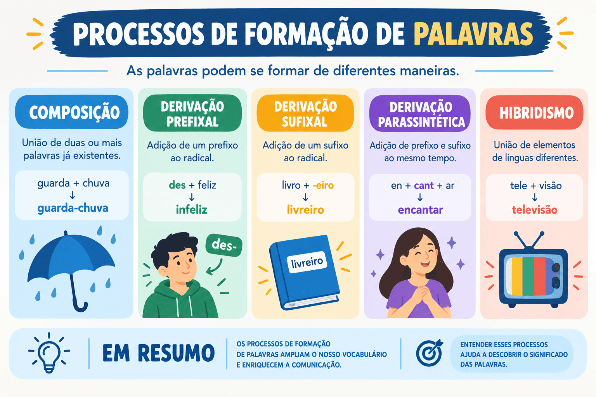

Processos de Formação de Palavras: Derivação, Composição e Exemplos
O léxico da Língua Portuguesa é um sistema dinâmico e em constante evolução. Para atender às necessidades expressivas dos falantes e acompanhar as transformações históricas, científicas e culturais, a língua conta com mecanismos sistemáticos para criar novos termos a partir de elementos mórficos preexistentes.
Compreender a morfologia e os processos de formação de palavras permite decifrar o significado de termos desconhecidos a partir de suas raízes, dominar a ortografia oficial e analisar com profundidade as escolhas lexicais de textos literários, jornalísticos e acadêmicos. Trata-se de um conteúdo basilar, exigido com frequência em questões de vestibulares (como PAES UEMA e ENEM) e concursos públicos.
Neste guia completo do Mestre Kira, você aprenderá detalhadamente os dois processos centrais da língua — a derivação (prefixal, sufixal, parassintética, regressiva e imprópria) e a composição (justaposição e aglutinação) —, além de processos complementares como hibridismo, onomatopeia, abreviação e neologismo, acompanhados de um quiz com gabarito comentado.

Conceitos fundamentais da estrutura mórfica
Antes de classificar os processos de formação, é indispensável reconhecer os elementos mínimos que constituem o esqueleto morfológico de uma palavra:
- Radical: elemento mórfico base que abriga o significado primordial da palavra (ex.: pedr- em pedra, pedreiro, pedregulho);
- Afixos: elementos que se acoplam ao radical para formar novas palavras, subdividindo-se em prefixos (posicionados antes do radical) e sufixos (posicionados após o radical);
- Palavra Primitiva: aquela que não se origina de nenhuma outra palavra no idioma (ex.: flor, dente, terra);
- Palavra Derivada: aquela que se forma a partir de uma palavra primitiva (ex.: florista, dentadura, terrestre).
Enquanto a derivação trabalha com a ampliação de apenas um radical por meio de afixos ou alterações funcionais, a composição exige a junção de dois ou mais radicais para formar um vocábulo único.
O Processo de Derivação
A derivação consiste na criação de uma palavra derivada a partir de uma palavra primitiva (ou de um único radical). Conforme o recurso mórfico empregado, divide-se em seis tipos fundamentais:
1. Derivação Prefixal (ou Prefixação)
Ocorre quando um prefixo é anexado antes do radical da palavra primitiva, mantendo, em regra, a mesma classe gramatical, mas alterando seu sentido original.
in- (prefixo de negação) + feliz (adjetivo) = infeliz (adjetivo)
- des- + fazer = desfazer;
- re- + ver = rever;
- pre- + ver = prever.
2. Derivação Sufixal (ou Sufixação)
Ocorre quando um sufixo é anexado após o radical da palavra primitiva. Esse processo frequentemente acarreta a mudança da classe gramatical da palavra base.
feliz (adjetivo) + -mente (sufixo adverbial) = felizmente (advérbio)
- pedra (substantivo) + -eiro = pedreiro (substantivo);
- belo (adjetivo) + -eza = beleza (substantivo);
- atual (adjetivo) + -izar = atualizar (verbo).
3. Derivação Prefixal e Sufixal
Ocorre quando um prefixo e um sufixo são acoplados à palavra primitiva de forma independente. Isso significa que, se retirarmos o prefixo, o termo restante continua existindo como palavra legítima na língua; da mesma forma, se retirarmos o sufixo, a palavra remanescente também existe.
in- + feliz + -mente → infelizmente
Sem o prefixo: felizmente (existe na língua).
Sem o sufixo: infeliz (existe na língua).
des- + leal + -dade = deslealdade
Existe a palavra lealdade (sem prefixo) e existe desleal (sem sufixo). Trata-se de derivação prefixal e sufixal.
4. Derivação Parassintética (ou Parassíntese)
Ocorre quando um prefixo e um sufixo são acrescentados ao radical de maneira simultânea e obrigatória. Na parassíntese, a palavra resultante não existe se apenas um dos afixos for retirado.
a- + noite + -ecer → anoitecer
Tentativa sem prefixo: *noitecer (não existe no idioma).
Tentativa sem sufixo: *anoite (não existe no idioma).
Outros vocábulos formados por parassíntese:
- en- + tard- + -ecer = entardecer (*tardecer não existe);
- en- + velh- + -ecer = envelhecer (*velhecer não existe);
- des- + alm- + -ado = desalmado (*almado não existe);
- es- + farel- + -ar = esfarelar (*farelar não existe).
Prefixal e Sufixal vs. Parassíntese
O confronto entre essas duas modalidades é uma das distinções mais exploradas em avaliações. O quadro a seguir ensina como resolver essa dúvida em poucos segundos:
| Critério | Derivação Prefixal e Sufixal | Derivação Parassintética (Parassíntese) |
|---|---|---|
| Acréscimo dos afixos | Independente e não simultâneo | Simultâneo e compulsoriamente conjunto |
| Teste de supressão de afixo | A palavra continua fazendo sentido sem um deles | A palavra deixa de existir se retirar um dos afixos |
| Exemplo 1 | Deslealdade (→ existe lealdade e desleal) | Amanhecer (→ não existe *manhecer) |
| Exemplo 2 | Inacessível (→ existe acessível) | Aterrorizar (→ não existe *terrorizar com esse radical simples) |
Método prático: tampe o prefixo com o dedo. A palavra que sobrou existe no dicionário? Se sim, tampe o sufixo: ela continua existindo? Se ambos os testes forem positivos, a derivação é prefixal e sufixal. Se a palavra deixar de existir ao retirar qualquer um dos lados, trata-se de parassíntese!
5. Derivação Regressiva (ou Deverbal)
Ocorre quando uma palavra é formada pela redução mórfica de uma palavra primitiva, em vez de acréscimo. É o processo típico que dá origem a substantivos abstratos que indicam ação derivados de verbos (por isso chamados de substantivos deverbais).
Geralmente, substitui-se a desinência de infinitivo (-ar, -er, -ir) pelas vogais temáticas nominais -a, -e ou -o:
Verbo de ação (primitivo) → Substantivo abstrato (derivado regressivo):
- debater → o debate;
- pescar → a pesca;
- comprar → a compra;
- sacar → o saque;
- combater → o combate.
Atenção para não inverter: Se a palavra derivada for um substantivo abstrato denotando a ação do verbo, o verbo é primitivo e o substantivo é derivado regressivo (almoçar → o almoço). Porém, se o substantivo nomear um objeto concreto, ele é primitivo e o verbo é derivado sufixal (âncora → ancorar; martelo → martelar).
6. Derivação Imprópria (ou Conversão)
A derivação imprópria ocorre quando uma palavra muda de classe gramatical e de significado em determinado contexto frasal, sem sofrer nenhuma alteração em sua estrutura gráfica ou fonética.
Casos recorrentes de derivação imprópria:
- Verbo que vira substantivo: O cantar dos pássaros encanta os ouvintes. (precedido pelo artigo “o”);
- Adjetivo que vira substantivo: Os jovens lideraram as manifestações.;
- Advérbio que vira substantivo: Ela não aceita um não como resposta.;
- Substantivo que vira adjetivo: Ele realizou uma jogada monstro na partida..
O Processo de Composição
A composição é o processo morfológico em que uma nova palavra é gerada a partir da união de dois ou mais radicais. Conforme haja ou não alteração fonética na junção, a composição divide-se em:
1. Composição por Justaposição
Ocorre quando os radicais se unem sem nenhuma perda ou alteração fonética. Cada radical preserva sua integridade sonora e ortográfica, podendo ou não haver hífen.
Radicais mantidos integralmente:
- guarda + chuva = guarda-chuva;
- passa + tempo = passatempo;
- gira + sol = girassol (o acréscimo gráfico da letra "s" visa preservar o fonema /s/, sem perda de fonemas);
- segunda + feira = segunda-feira;
- pé + de + meia = pé-de-meia.
2. Composição por Aglutinação
Ocorre quando os radicais se fundem com perda, alteração ou supressão de fonemas ou de elementos mórficos originais. Pelo menos um dos radicais sofre modificação na sua estrutura sonora.
Radicais com fusão fonética:
- plano + alto = planalto (supressão da vogal 'o');
- vinho + acre = vinagre (alteração fonética global);
- filho + de + algo = fidalgo;
- água + ardente = aguardente;
- em + boa + hora = embora;
- perna + alta = pernalta.
Processos Secundários de Formação de Palavras
Além da derivação e da composição, o sistema da Língua Portuguesa dispõe de outros processos secundários para a renovação de seu vocabulário:
Hibridismo
Ocorre quando a palavra é construída pela combinação de elementos mórficos originários de línguas diferentes:
- sociologia: socio- (latim) + -logia (grego);
- automóvel: auto- (grego) + -móvel (latim);
- televisão: tele- (grego) + -visão (latim);
- burocracia: bureau (francês) + -cracia (grego).
Onomatopeia
Formação de palavras com o intuito de reproduzir ou imitar sons, ruídos e vozes de animais ou da natureza: tique-taque, zumbido, miau, reco-reco, zunzum, cocoricó, estalo, sussurro.
Abreviação Vocabular (ou Redução)
Consiste na eliminação de um segmento da palavra para economizar esforço articulatório, criando uma forma reduzida que passa a circular com autonomia:
- fotografia → foto;
- motocicleta → moto;
- cinematógrafo → cinema → cine;
- pneumático → pneu;
- quilograma → quilo.
Siglonimização (Criação de Siglas)
Formação de palavras a partir das letras ou sílabas iniciais de uma expressão composta ou nome institucional: ENEM (Exame Nacional do Ensino Médio), UEMA (Universidade Estadual do Maranhão), ONU (Organização das Nações Unidas), SUS (Sistema Único de Saúde).
Neologismo
Criação deliberada de uma palavra inteiramente nova ou atribuição de um novo significado a um vocábulo já existente para nomear novas realidades tecnológicas, culturais e sociais: deletar, sextar, empoderamento, printar, blogueiro.
Quadro Síntese dos Processos de Formação
| Processo | Definição Estrutural | Exemplo Canônico |
|---|---|---|
| Derivação Prefixal | Acréscimo de prefixo antes do radical | Desleal, rever, infeliz |
| Derivação Sufixal | Acréscimo de sufixo após o radical | Lealdade, felizmente, pedreira |
| Derivação Prefixal e Sufixal | Prefixação e sufixação independentes | Deslealdade, infelizmente |
| Derivação Parassintética | Prefixação e sufixação simultâneas e obrigatórias | Anoitecer, esfarelar, desalmado |
| Derivação Regressiva | Redução do verbo para formar substantivo abstrato | O debate (de debater), a compra |
| Derivação Imprópria | Mudança de classe gramatical sem alteração gráfica | O cantar, o monstro (adjetivado) |
| Composição por Justaposição | União de radicais sem perda fonética | Guarda-roupa, girassol, passatempo |
| Composição por Aglutinação | Fusão de radicais com perda fonética | Planalto, vinagre, fidalgo |
| Hibridismo | Junção de radicais de idiomas distintos | Sociologia, automóvel |
Passo a passo para classificar a formação de palavras em provas
-
Conte os radicais da palavra:
- Possui mais de um radical com significados autônomos? É composição (analise se houve perda sonora para decidir entre justaposição e aglutinação).
- Possui apenas um radical base? É derivação.
-
Se for derivação, verifique a presença de afixos:
- Possui apenas prefixo? → Prefixal.
- Possui apenas sufixo? → Sufixal.
- Possui ambos? Faça o teste de retirada: se retirar um e a palavra continuar existindo, é prefixal e sufixal; se a palavra não existir sem um deles, é parassintética.
-
Se não houver acréscimo de afixos:
- A palavra encurtou e virou substantivo a partir de um verbo de ação? → Regressiva.
- A palavra é idêntica ao vocábulo comum, mas mudou de classe no contexto? → Imprópria.
Quiz — Processos de Formação de Palavras
Questão 1 — As palavras “anoitecer”, “entardecer” e “envelhecer” formaram-se pelo processo de:
Questão 2 — O vocábulo “planalto” (plano + alto) é um exemplo canônico de:
Questão 3 — Em “O atleta participou de um árduo combate na arena”, a palavra destacada (“combate”) originou-se do verbo “combater” por meio de:
Questão 4 — Na frase “O olhar penetrante daquela mulher fascinava a todos”, o termo “olhar” funcionou como substantivo por:
Questão 5 — A palavra “deslealdade” classifica-se quanto à sua formação como:
Questão 6 — O vocábulo “girassol” (gira + sol) é classificado como:
Questão 7 — A palavra “sociologia” é formada por elementos de origens grega e latina. Trata-se de um caso típico de:
Questão 8 — Em qual das alternativas a palavra destacada NÃO foi formada por parassíntese?
Questão 9 — Palavras como “moto” (de motocicleta), “cine” (de cinema) e “foto” (de fotografia) são exemplos de:
Questão 10 — Assinale a opção que indica, respectivamente, os processos de formação de “vinagre” e “passatempo”:
Resumo sobre processos de formação de palavras
- A derivação atua sobre um único radical; a composição une dois ou mais radicais.
- A derivação prefixal acrescenta prefixo antes do radical (ex.: refazer).
- A derivação sufixal acrescenta sufixo após o radical, alterando frequentemente a classe gramatical (ex.: felizmente).
- Na derivação prefixal e sufixal, os afixos são independentes (ex.: infelizmente).
- Na derivação parassintética, os afixos ligam-se de forma simultânea e inseparável (ex.: anoitecer).
- A derivação regressiva encurta verbos de ação para criar substantivos abstratos (ex.: pescar → a pesca).
- A derivação imprópria muda a classe gramatical da palavra sem alterar sua forma gráfica (ex.: o cantar).
- A composição por justaposição preserva a integridade fonética dos radicais (ex.: passatempo, girassol).
- A composição por aglutinação funde os radicais com perda ou alteração fonética (ex.: planalto, vinagre).
- Hibridismo une radicais de línguas distintas; onomatopeia imita sons; abreviação reduz o vocábulo.
Conclusão
Os processos de formação de palavras constituem o alicerce de sustentação do léxico da Língua Portuguesa. Conhecer a anatomia mórfica das palavras confere autonomia interpretativa e instrumentaliza o estudante a reconhecer nuances de significado em diferentes gêneros discursivos.
Nas provas de vestibulares e concursos públicos, a capacidade de identificar o radical e classificar com segurança as derivações e composições é determinante para gabaritar questões objetivas de morfologia, além de ampliar o repertório vocabular indispensável para a escrita da redação.
Perguntas frequentes sobre formação de palavras
Qual a diferença entre derivação e composição?
A derivação ocorre a partir de um único radical, que recebe afixos (prefixos ou sufixos) ou sofre alterações funcionais. A composição ocorre a partir da união de dois ou mais radicais diferentes para formar uma nova palavra.
Como saber se a derivação é parassintética ou prefixal e sufixal?
Faça o teste da retirada de um afixo: se a palavra continuar existindo sem o prefixo ou sem o sufixo (como em infelizmente → felizmente / infeliz), é derivação prefixal e sufixal. Se a palavra deixar de existir caso um dos afixos seja retirado (como em anoitecer → não existe noitecer nem anoite), é derivação parassintética.
Por que "girassol" é justaposição se ganhou a letra "s"?
Porque nenhum dos radicais (gira e sol) perdeu fonemas ou sofreu alteração de pronúncia. A duplicação da letra “s” é uma regra ortográfica para preservar o som de /s/ intervocálico da palavra primitiva, caracterizando justaposição.
O que é uma palavra formada por derivação imprópria?
É uma palavra que passa a pertencer a outra classe gramatical dependendo do contexto, sem sofrer nenhuma alteração em sua grafia. Um exemplo clássico é o verbo cantar transformado em substantivo pelo artigo: “O cantar das aves”.
O que são substantivos deverbais?
São substantivos abstratos derivados de verbos por meio de derivação regressiva, indicando o resultado ou a ação do verbo original (ex.: luta de lutar; ajuda de ajudar).
Conteúdos relacionados
- Termos Integrantes e Acessórios da Oração
- Orações Coordenadas e Subordinadas: como reconhecer e classificar
- Conjunções da Língua Portuguesa: o que são, tipos, usos e exemplos explicados
- Locuções Adverbiais: o que são, tipos e exemplos
- Sintaxe: estrutura da oração e relações entre as palavras
- Interpretação e Produção Textual
- Gramática da Língua Portuguesa: Guia Completo
- Conteúdos de Gramática — Página 2
- Conteúdos de Gramática — Página 3
- Conteúdos de Gramática — Página 4
Referências bibliográficas
- BECHARA, Evanildo. Moderna Gramática Portuguesa. 37. ed. Rio de Janeiro: Nova Fronteira, 2009.
- CEGALLA, Domingos Paschoal. Novíssima Gramática da Língua Portuguesa. 48. ed. São Paulo: Companhia Editora Nacional, 2008.
- CUNHA, Celso; CINTRA, Lindley. Nova Gramática do Português Contemporâneo. 6. ed. Rio de Janeiro: Lexikon, 2013.
- GARCIA, Othon Moacyr. Comunicação em Prosa Moderna. 27. ed. Rio de Janeiro: Editora FGV, 2010.
- ROCHA LIMA, Carlos Henrique da. Gramática Normativa da Língua Portuguesa. 49. ed. Rio de Janeiro: José Olympio, 2011.
Explore Outros Conteúdos
Continue seus estudos acessando outras seções do site Mestre Kira: